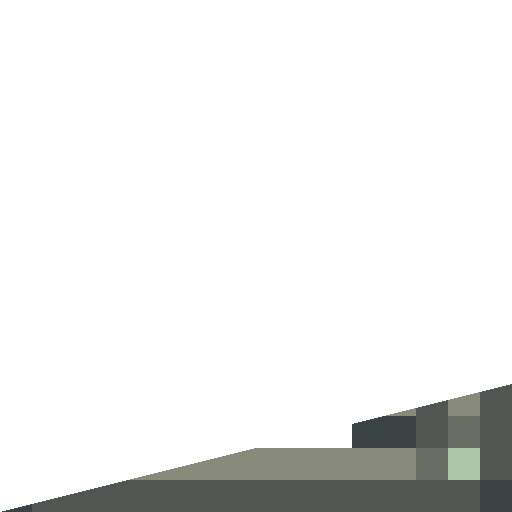
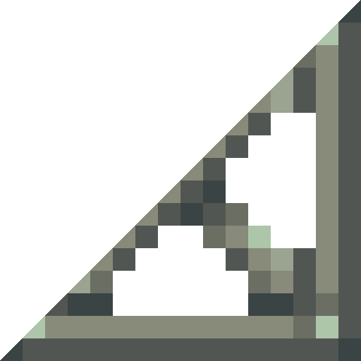

Create: Copycats+
附属模组
用任意材质伪装成任意形状的方块
这是什么
纯建筑工具：一块伪装方块可以套用任意贴图，再切成台阶、楼梯、栏杆、窗、板等形状。搭场景时不用为每种材质各做一套模型品，一块就够。
命名空间：
copycats 1.20.1 版本：本页物品与配方直接取自该版本的 jar。其他36
伪装基类copycats:copycat_base
没有工作台/机器配方
伪装梁copycats:copycat_beam
没有工作台/机器配方
伪装薄板copycats:copycat_board
没有工作台/机器配方
伪装盒copycats:copycat_box
没有工作台/机器配方
伪装小方块板copycats:copycat_byte_panel
没有工作台/机器配方
伪装狭道copycats:copycat_catwalk
没有工作台/机器配方
伪装齿轮copycats:copycat_cogwheel
没有工作台/机器配方
伪装切角copycats:copycat_corner_slice
没有工作台/机器配方
伪装门copycats:copycat_door
没有工作台/机器配方
伪装栅栏copycats:copycat_fence
没有工作台/机器配方
伪装栅栏门copycats:copycat_fence_gate
没有工作台/机器配方
水平伪装片copycats:copycat_flat_pane
没有工作台/机器配方
伪装流体管道copycats:copycat_fluid_pipe
没有工作台/机器配方
伪装折叠门copycats:copycat_folding_door
没有工作台/机器配方
伪装玻璃流体管道copycats:copycat_glass_fluid_pipe
没有工作台/机器配方
半伪装板copycats:copycat_half_panel
没有工作台/机器配方
伪装铁门copycats:copycat_iron_door
没有工作台/机器配方
伪装铁活板门copycats:copycat_iron_trapdoor
没有工作台/机器配方
伪装梯子copycats:copycat_ladder
没有工作台/机器配方
伪装大齿轮copycats:copycat_large_cogwheel
没有工作台/机器配方
伪装片copycats:copycat_pane
没有工作台/机器配方
伪装传动杆copycats:copycat_shaft
没有工作台/机器配方
伪装台阶copycats:copycat_slab
没有工作台/机器配方
伪装切棱copycats:copycat_slice
没有工作台/机器配方
伪装推拉门copycats:copycat_sliding_door
没有工作台/机器配方
伪装斜坡copycats:copycat_slope
没有工作台/机器配方

伪装斜坡层copycats:copycat_slope_layer
没有工作台/机器配方
伪装楼梯copycats:copycat_stairs
没有工作台/机器配方
伪装石头按钮copycats:copycat_stone_button
没有工作台/机器配方
伪装活板门copycats:copycat_trapdoor
没有工作台/机器配方
垂直伪装切棱copycats:copycat_vertical_slice
没有工作台/机器配方

垂直伪装斜坡copycats:copycat_vertical_slope
没有工作台/机器配方
垂直伪装楼梯copycats:copycat_vertical_stairs
没有工作台/机器配方
垂直伪装半阶copycats:copycat_vertical_step
没有工作台/机器配方
伪装墙copycats:copycat_wall
没有工作台/机器配方
伪装木质按钮copycats:copycat_wooden_button
没有工作台/机器配方
方块4
伪装方块copycats:copycat_block
没有工作台/机器配方
伪装小方块copycats:copycat_byte
没有工作台/机器配方
伪装幽灵方块copycats:copycat_ghost_block
没有工作台/机器配方
包装伪装方块copycats:wrapped_copycat
没有工作台/机器配方
伪装层4
半伪装层copycats:copycat_half_layer
没有工作台/机器配方
伪装层copycats:copycat_layer
没有工作台/机器配方
堆叠半伪装层copycats:copycat_stacked_half_layer
没有工作台/机器配方
垂直半伪装层copycats:copycat_vertical_half_layer
没有工作台/机器配方
压力板4
伪装重质测重压力板copycats:copycat_heavy_weighted_pressure_plate
没有工作台/机器配方
伪装轻质测重压力板copycats:copycat_light_weighted_pressure_plate
没有工作台/机器配方
伪装石头压力板copycats:copycat_stone_pressure_plate
没有工作台/机器配方
伪装木质压力板copycats:copycat_wooden_pressure_plate
没有工作台/机器配方